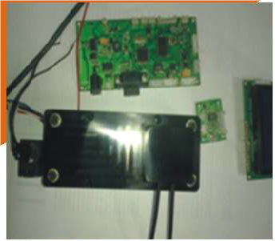
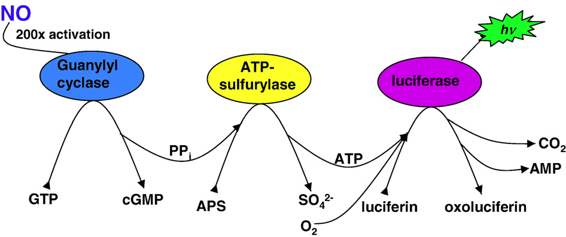
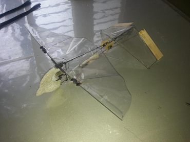
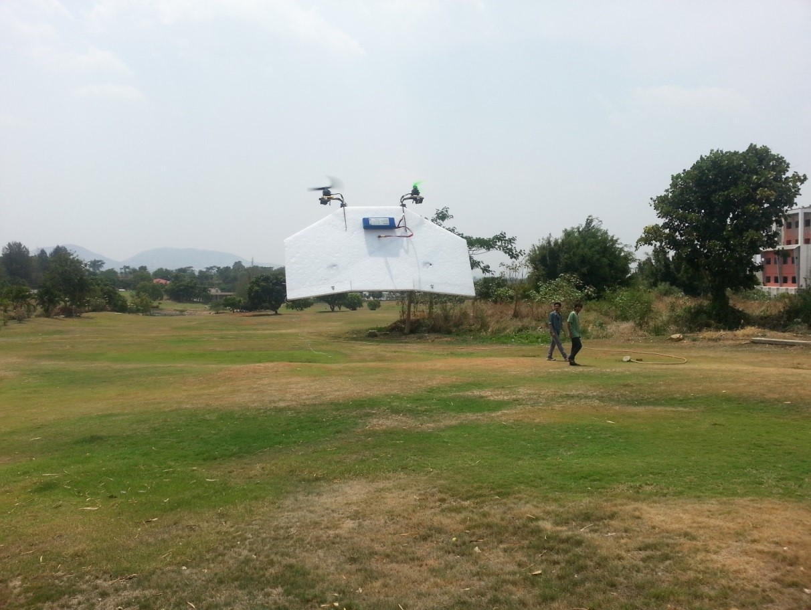
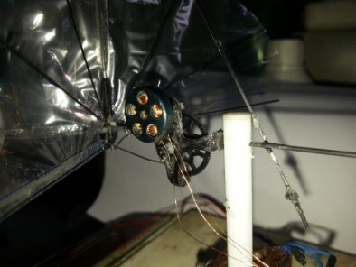
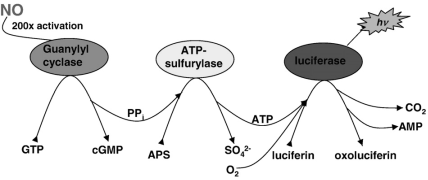
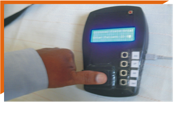

Development of Chemical and Biosensors at NDRF
A focus area for NDRF and its consortium partners is chemical and
biosensors to detect toxic gases and pathogens. This has been
supported by the National Program for Micro Air Vehicles
(NPMICAV).
A biosensor to detect nitric oxide using its natural receptor
Guanylyl cyclase with luminescence intensity as the indicator
was
taken to proof of concept to prototype stage by of NDRF and a
device fabricated by bigtec. A simulation model was also
developed
by NDRF based on experimental data from the nitric oxide
biosensor.
A miniaturized biological collection payload and micro PCR for
detection of bacterial (anthrax) pathogen is being developed by
bigtec.
A Lab on Chip prototype to sense ammonia was developed by Anna
University in collaboration with Concordia University of Canada.
Jain
University is developing a nano biosensor for detecting ammonia,
for
using in a micro air vehicle. Jain University is also working on
R&D
for a biofuel cell.
Development of Simulation Model for Biosensors

Project on “Micro and Bio-mimetic Modelling and Design /
Development of
Micro-Bio system for MICAV (Biosensor for Detection of Nitric Oxide
using its Natural ligand Guanylyl Cyclase)” has been sanctioned by
AR&DB. The Project is directly handled by NDRF with Dr. L. V.
Muralikrishna Reddy, as the Principal Investigator. The first phase
of
the project is being carried out in collaboration with IISc,
Abexome
Pvt. Ltd and bigtec Pvt. Ltd. The progress achieved till date and
the
critical experimental results obtained at the NDRF / bigtec / IISc
are
very encouraging and have yielded deliverables. A detailed
presentation
has been made to the Programme Review Committee of NP-MICAV at
National
Aerospace Laboratories.
The Objective of the Project is to build a simulation model of
nitric
oxide biosensor, using enzyme kinetics. The simulation will be done
using Bioinformatics software COPASI, Genesis and MATLAB.
TO STUDY EFFECTS OF MORPHING WINGS ON MICAVS

NDRF has been sanctioned a NP-MICAV Project to study Effect of Morphing Wing
on Micro Air Vehicles MICAVs). Morphing the wings as in natural filers has
several advantages. The purpose of this project is to evaluate the cost and
benefits of the three different designs-elbow joint on wing rotation, for
enhanced lift. The main aim of the project is to develop a 300 mm Flapper
Wing MAV with elbow joints based using a small spring. The elbow is allowed
to bend during upstroke and straightness during down/power stroke. A
flapping wing MICAV with elbow joints “frozen” was used. A pin was inserted
through the elbow joint to prevent bending at the joint. This MAV has an
all-up weight of 17.5 gms, endurance of 14.2 minutes and runs on a 130mAHr
3.7 V LiPo battery. Flight tests have proved that the lateral stability
gets affected with the elbow joint. Springs of different stiffness were
tried out to confirm stability issues different CG locations were tested
with no change in the stability issue. However, although straight line
flight is relatively stable, but even the slightest change in heading would
lead to a compromise in stability. This particular design needs further
studies to understand the cause of instability to enable us to take
advantage of the benefits of low velocity lift offered by these
arrangements in the absence of any literature on this subject.
DESIGN AND DEVELOPMENT OF A TRANSITIONING VTOL MICAV

NDRF is developing a Transitioning VTOL (Vertical Takeoff and Landing)
under a NP-MICAV project. VTOL platforms have several advantages, the most
important being their ability to take off and land from confined spaces and
the ability to hover and stay stationary at any position. VTOL platforms in
hover are very stable platforms for various sensors, including imaging and
chemical detection.
This 300mm micro transitioning vehicle is a flying wing planform and
utilizes a bi-rotor configuration in hover mode. Either elevons, or
independent motor tilt will be utilized for control during hover. In hover
mode, the bi-rotors will utilize contra rotating propellers and have
independent speed controls using high update rate controllers.
To enter the fixed wing mode, the motors will tilt forward until the MICAV
transitions completely. Control during high alpha, for fast hover, will
also be possible.
This project has completed the first year where in MINIAV was develop and
the and Second year of the Project involves developing of 300 mm Micro
VTOL.
DESIGN AND DEVELOPMENT OF 125MM FLAPPING WING MAV

Micro Air Vehicles (MICAV) are being used for surveillance in disaster
management, search/rescue and security applications Fixed wing MICAVs are
utilized for longer ranges and where higher speeds are acceptable.
Flapping wing MICAV or Ornithopter attempt to imitate wing kinematics and
utilize the flapping wings for lift and thrust. Because of their near
invisible structure (Rods, and transparent covering for the most part of
it) they will have the ability to get close to the object of interest
un-noticed. Their physical appearance also aids in stealth operation
Flappers are much more power efficient than rotary wings. Flappers also
have the ability to hover, and sometimes even fly backwards making them
very maneuverable platforms. Flappers can also fly past windows, doors and
through corridors to help collect more data from the area of interest.
NDRF has successfully developed a 125mm span Flapping Wing MICAV under a
NP-MICAV Project that has the potential for surveillance application and
disaster management. The Project was reviewed in January 2015 by the Review
Committee of NP-MICAV
BIOSIMULATION

NDRF was sanctioned to build a simulation model of nitric oxide biosensor,
using enzyme kinetics. The model is a cumulation of enzyme kinetic
behaviour of the each enzyme in the biosensor. It was concluded that
experimental variation exists within a system that needs to be taken into
consideration which makes it unsuitable for integration into the sensor.
This project is successfully closed.
DEVELOPMENT OF PROTOTYPE AND MANUFACTURE OF NON-INVASIVE GLUCOMETER USING
NIR SPECTROMETRY

NDRF has taken up a project jointly with Indian Council of Medical Research
(ICMR) to develop a Glucometer for Non-Invasive Measurement of Blood
Glucose in Diabetic Patients by using (Near Infra-Red-NIR) NIR- emitter and
silicon photo detector with wave length of 100 to 1100nm. The instrument
measures the absorbance of NIR in the blood and displays the readings on
the display as ADC (analogue to digital values) which is computed to the
blood glucose levels in Mg/dl. and displayed on the instrument or computer
screen using proprietary software application. The advantages of using this
glucometer are that, it needs no piercing of the Skin, no blood samples are
taken and hence doesn’t cause any pain to patients. As it does away with
needles or chemical strips there is no cost involved to buy them. Once the
Meter is purchased, the only cost that is involved is in purchasing the
battery, which is a consumable. One diabetic patients who have to undergo
repeated tests of their blood glucose level will certainly find cost
reduction in their expenses, using this unit.
Indian Council of Medical Research (ICMR) funded Project “Development and
Manufacture of Non-Invasive Glucometer” handled by NDRF in collaboration
with Indus Biomedical Devices has been progressed well. The first Prototype
was successfully validated and clinical trials conducted at Jnana
Sanjeevini Medical Centre & Diabetes Hospital Bangalore. It is expected
that the final Non Invasive Glucometer can be delivered with the
calibration, and validation within the stipulated project deadline. To
finalize this into a product suitable modification in software and
algorithm are under progress. The functioning of the Prototype Glucometer
successfully demonstrated recently at ICMR and the Authorities at ICMR were
satisfied with the development of the Product.